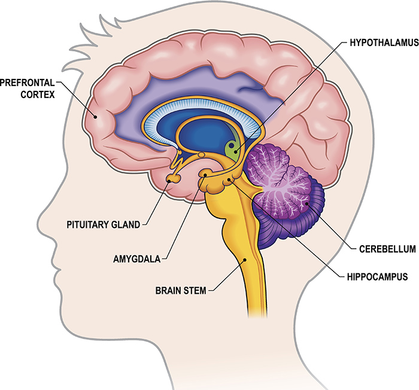
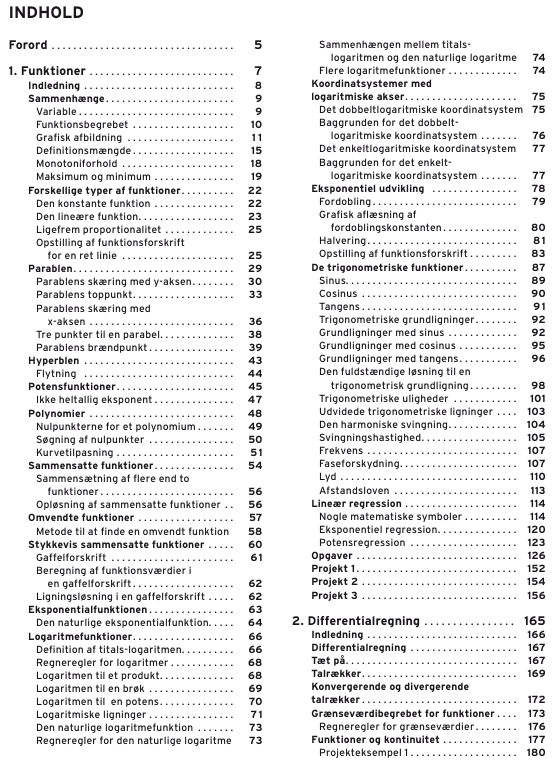
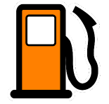
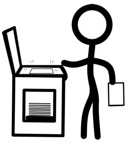
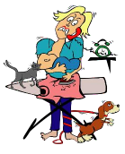
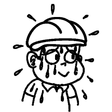
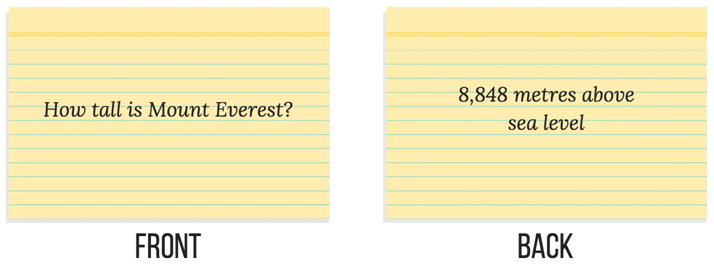
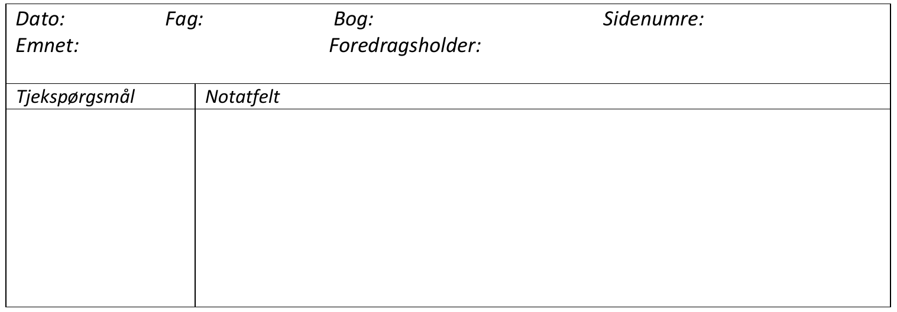
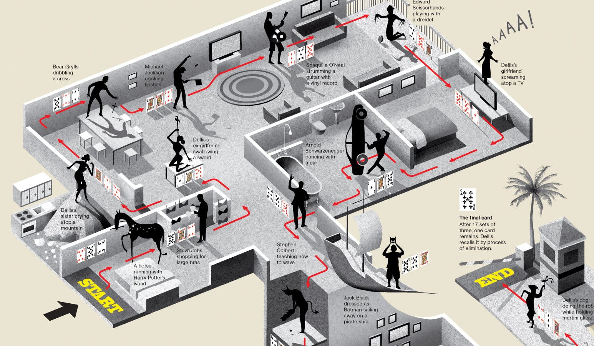

Kender I det?
Forsøge at proppe så meget ind i hovedet som muligt på kort tid. Typisk lige før en eksamen.

Kender I det?

At læse teksten igen og igen på samme måde. Ved passiv læsning menes der, at linjerne blot læses uden videre bearbejdning.

Kender I det?

Kender I det?


Det kræver bare sved på panden.


